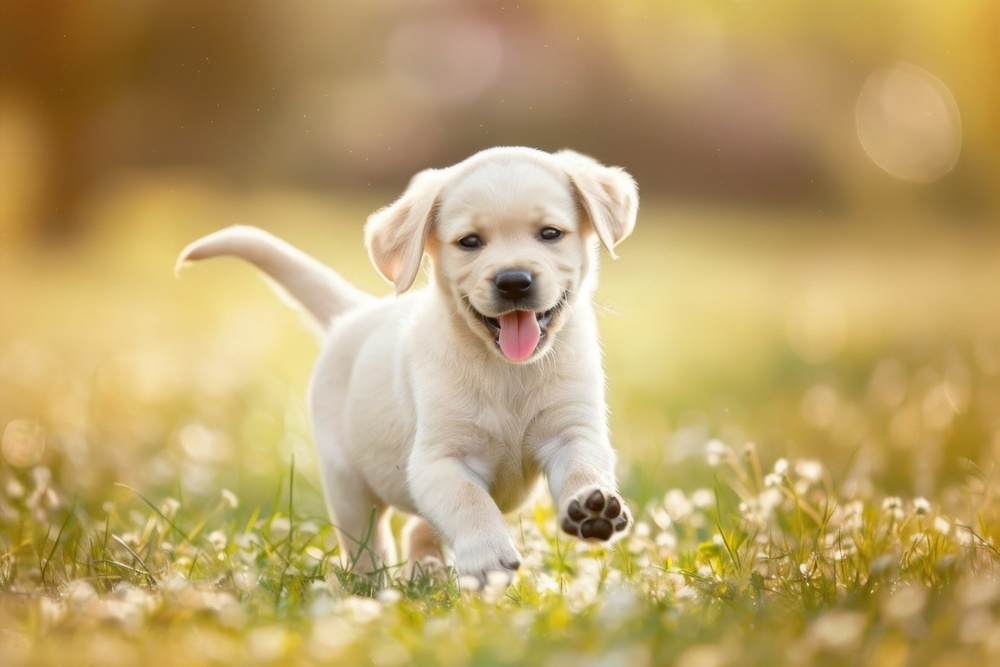
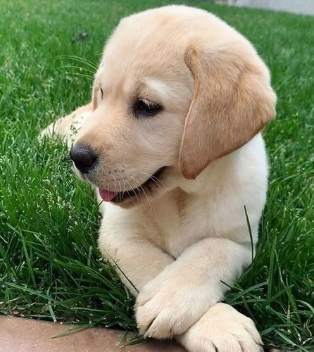
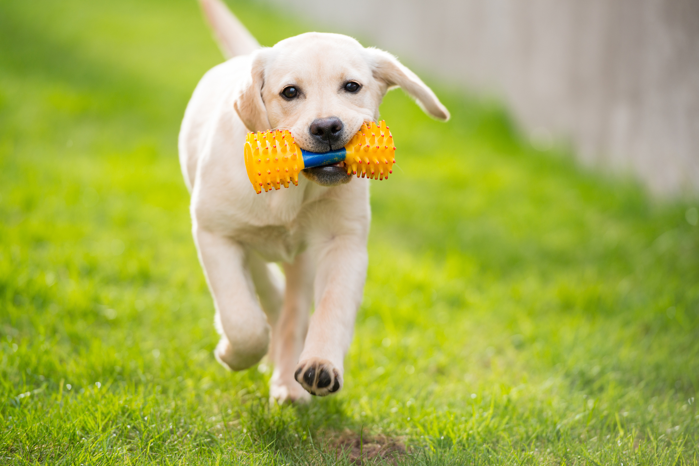
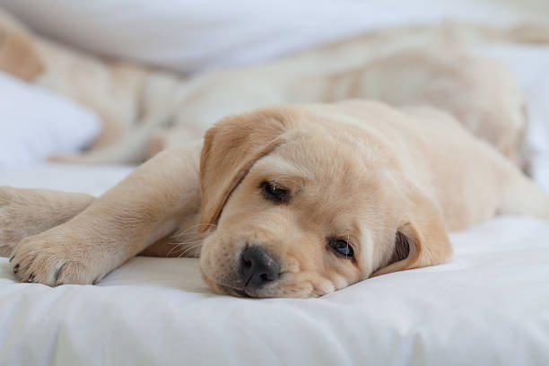

WOOF!


Hi, I’m Buddy! I’m a Labrador with a lot of charm—and I mean A LOT. My cuteness is off the charts, and I’m basically a chick magnet. Seriously, I can’t walk down the street without getting showered with pets, treats, and love from every direction. I’ve got the softest fur, the sweetest puppy eyes, and let’s not forget, I’m a *pro* at rolling over for belly rubs. If you’re looking for a guy who’s playful, loyal, and always up for a game of fetch, I’m your dog! But I’m not just about looks—I’m also a bit of a troublemaker. I LOVE to bark at anything that moves. And even things that don’t. Birds? Bark. The mailman? Bark. That sock you just dropped? Oh yeah, bark. I can keep you entertained all day long. When I’m not barking, you can find me hoarding sticks like they’re treasure. If there’s a stick within a mile, you bet I’ll find it and carry it around like it’s the most important thing in the world. Oh, and don’t worry, I’m also a master of *gastronomy.* My farts are so powerful, they could clear a room in seconds. It’s my little superpower—don’t say I didn’t warn you! So yeah, I’m Buddy—the stick-chasing, treat-loving, belly-rub-demanding, farting chick magnet. You can thank me later.